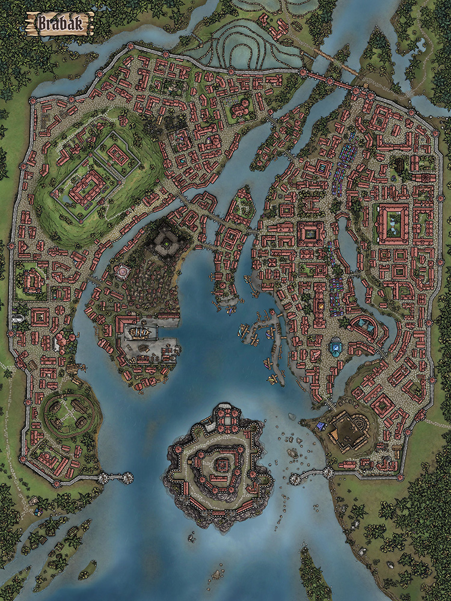

Tor zur Wildnis – Stadt am Rand des Möglichen
Verloren in den Dschungeln des tiefen Südens liegt Brabak – eine Stadt, die wie ein Fiebertraum zwischen Untergang und Aufbruch schwankt. Errichtet an den Ufern des träge dahinziehenden Mysob, ist sie eine der letzten Bastionen der Zivilisation vor dem endlosen, dampfenden Grün Meridianas. Hier, wo das Land selbst Leben zu atmen scheint, ragen die schwarzen Mauern Brabaks wie Narben aus der Wildnis.
Einst Zentrum eines eigenen Königreichs, hat die Stadt ihre besten Jahre hinter sich – und doch pulsiert sie vor Leben. Händler, Schurken, Alchemisten, Söldner und Entdecker kreuzen sich in den engen Gassen, wo bunter Dschungelduft den beißenden Gestank von Alraunen, Schweiß und Exotik überdeckt. Brabak ist ein Ort für jene, die anderswo keinen Platz mehr haben – und für jene, die ihr Glück im Verlorenen suchen.
Zwischen bröckelnden Fassaden und den lodernden Farben fremdartiger Pflanzen weht der Geist alter Zeiten, und über allem thront das unbändige Tosen des Regenwalds. Wer hier lebt, kennt keine Sicherheit – nur Chancen.
